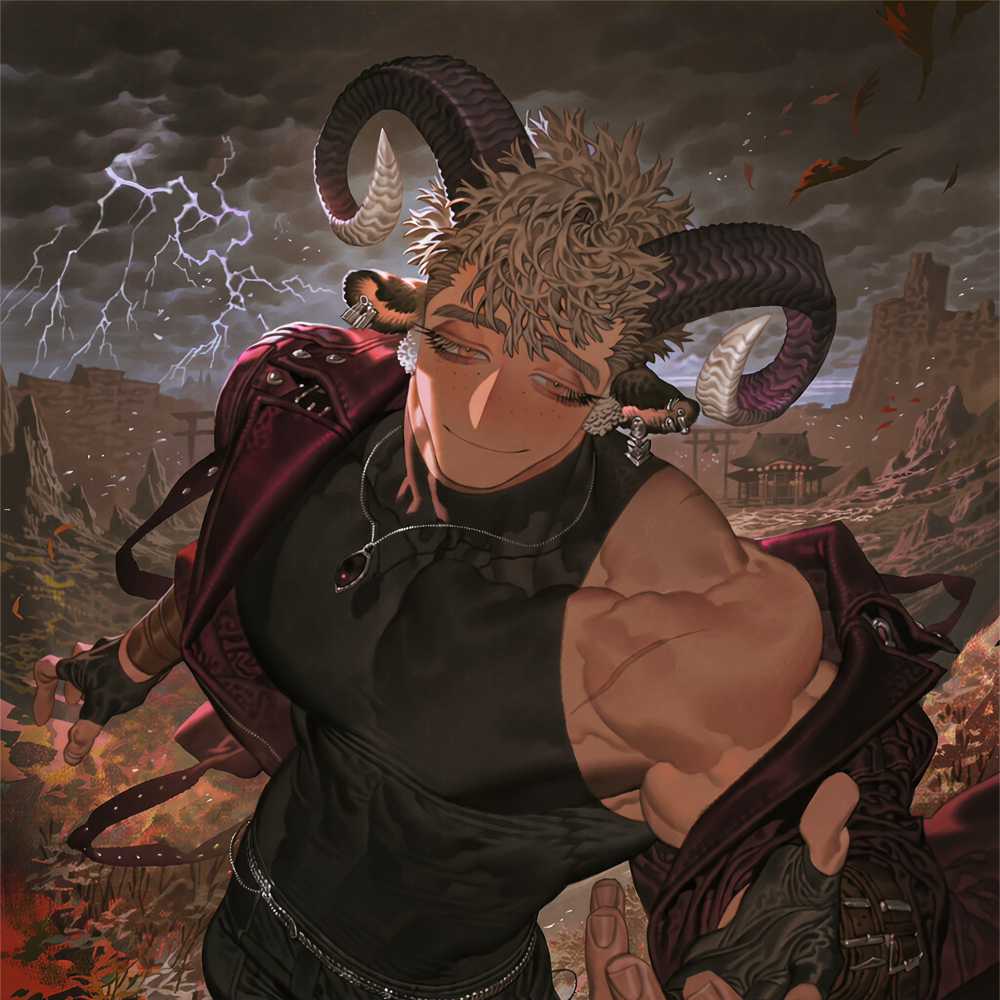

CHARACTER RECORD / 023STATUS: AVAILABLE

✦IMAGE
NOT FOUND
NOT FOUND
エゼル
✦ WITH OUTFIT
服装込み
PROMPT DATATXT / 023
masterpiece, best quality, ultra detailed, intricate details, boy, adult male, muscular horned man,
1.7::extremely muscular male, massive muscular build, broad shoulders, thick neck, huge biceps, powerful forearms, bulging chest, sharply defined abs, muscular thighs::, 1.6::large curled ram horns, spiraling outward from the temples, dark charcoal horns with ivory-colored tips, fluffy sheep ears, small tufts of wool around the ears and nape::, 1.5::short tousled ash-blond hair, textured cropped hairstyle, loose strands falling across the forehead::, 1.6::droopy eyes, downturned outer eye corners, sleepy half-lidded gaze, soft amber eyes, long eyelashes::, 1.3::warm tan skin, small freckles across the nose, faint scar on the collarbone::,
1.5::sleeveless black fitted shirt stretched over a muscular torso, open dark burgundy jacket slipping off one shoulder, black leather trousers, heavy buckled boots, fingerless gloves, silver chain belt::, 1.3::multiple silver ear cuffs, dark gemstone pendant, leather wrist wraps::,
1.5::lazy crooked smile, relaxed intimidating presence, gentle but dangerous charm, unhurried confidence::,